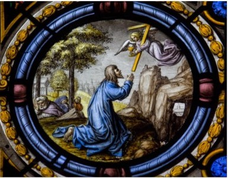

There are numerous citations of Zechariah in these last chapters of Matthew, here about the shepherds and the Mount of Olives.

26:30 And when they had sung an hymn, they went out into the mount of Olives. 26:31 Then saith Jesus unto them, All ye shall be offended because of me this night: for it is written,
I will smite the shepherd, and the sheep of the flock shall be scattered abroad Zech 13:7.
26:32 But after I am risen again, I will go before you into Galilee. 26:33 Peter answered and said unto him, Though all men shall be offended because of thee, yet will I never be offended. 26:34 Jesus said unto him, Verily I say unto thee, That this night, before the cock crow, thou shalt deny me thrice. 26:35 Peter said unto him, Though I should die with thee, yet will I not deny thee. Likewise also said all the disciples. 26:36 Then cometh Jesus with them unto a place called Gethsemane, and saith unto the disciples, Sit ye here, while I go and pray yonder. 26:37 And he took with him Peter and the two sons of Zebedee, and began to be sorrowful and very heavy. 26:38 Then saith he unto them, My soul is exceeding sorrowful, even unto death: tarry ye here, and watch with me. 26:39 And he went a little farther, and fell on his face, and prayed, saying, O my Father, if it be possible, let this cup pass from me: nevertheless not as I will, but as thou wilt. 26:40 And he cometh unto the disciples, and findeth them asleep, and saith unto Peter, What, could ye not watch with me one hour? 26:41 Watch and pray, that ye enter not into temptation: the spirit indeed is willing, but the flesh is weak. 26:42 He went away again the second time, and prayed, saying, O my Father, if this cup may not pass away from me, except I drink it, thy will be done. 26:43 And he came and found them asleep again: for their eyes were heavy. 26:44 And he left them, and went away again, and prayed the third time, saying the same words. 26:45 Then cometh he to his disciples, and saith unto them, Sleep on now, and take your rest: behold, the hour is at hand, and the Son of man is betrayed into the hands of sinners.26:46 Rise, let us be going: behold, he is at hand that doth betray me.
~~~~~~~